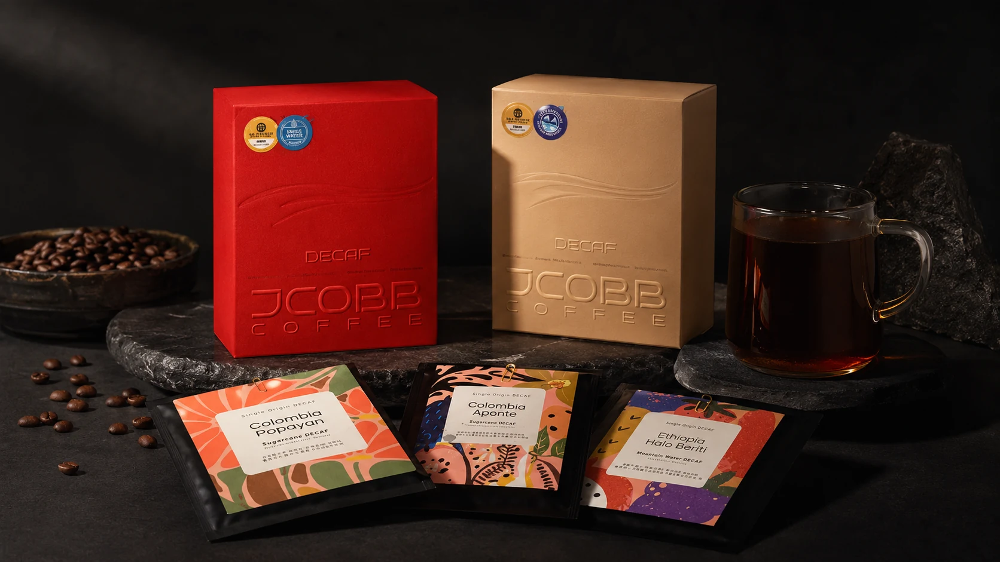

1
디카페인 아이스 아메리카노
가장 쉽게 도입 가능한 기본 메뉴. 오후 고객과 카페인 민감 고객에게 적합합니다.
단순히 카페인을 줄인 커피가 아니라, 아메리카노·라떼·샤케라또 등 카페 메뉴로 활용할 수 있는 풍미와 운영성을 기준으로 제안합니다.

새로운 장비 없이 기존 에스프레소 머신과 기본 재료로 시작하기 쉬운 메뉴 중심입니다.
가장 쉽게 도입 가능한 기본 메뉴. 오후 고객과 카페인 민감 고객에게 적합합니다.
라떼 고객에게 디카페인 선택지를 제공해 메뉴 만족도를 높입니다.
여름 시즌 한정 메뉴로 차별화하기 좋은 시그니처 음료입니다.

드립백은 단순 진열 상품이 아니라, 매장에서 경험한 디카페인을 집으로 연결하는 추가 매출 상품입니다.
카운터와 계산대 주변에서 쉽게 노출
카페인 부담이 적은 홈카페·선물용 제품
메뉴 경험을 리테일 구매로 연결
테스트빈 신청 후 메뉴 스타일에 맞춰 상담드립니다.